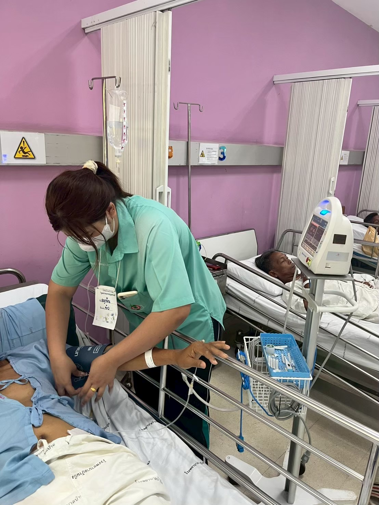
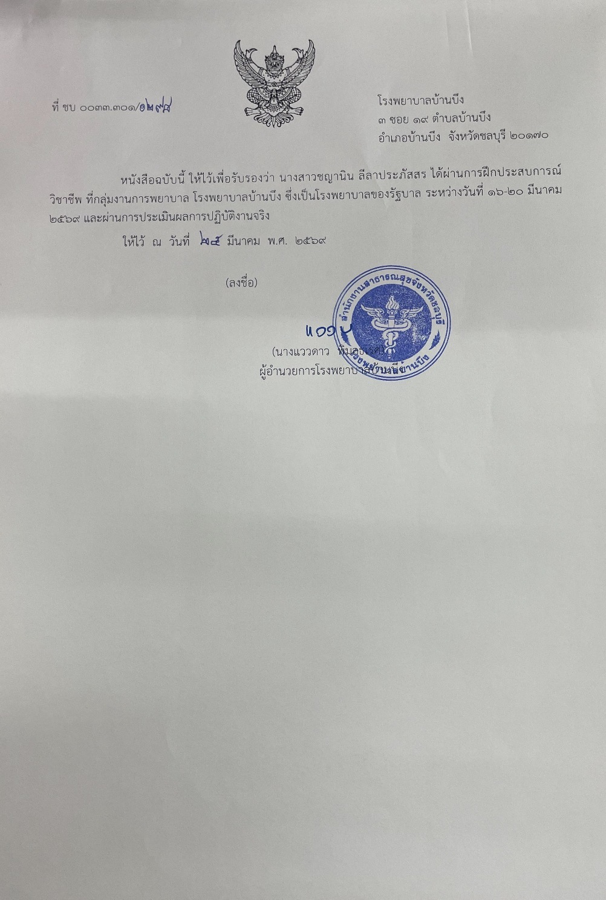
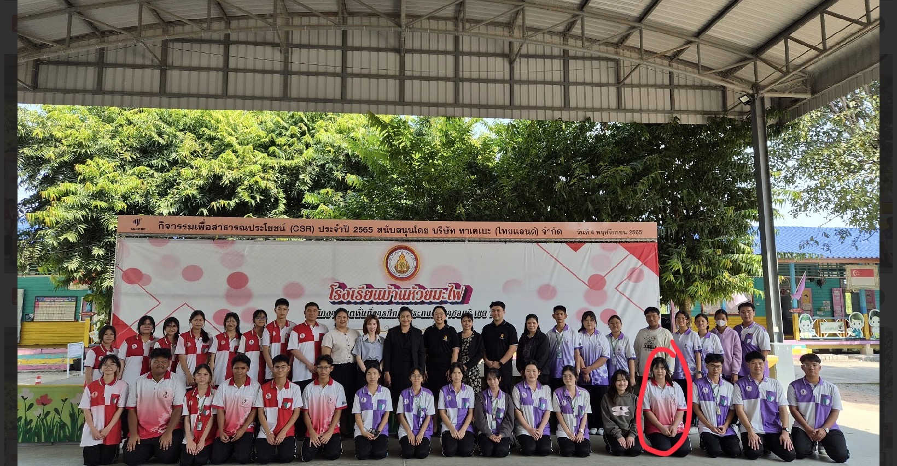
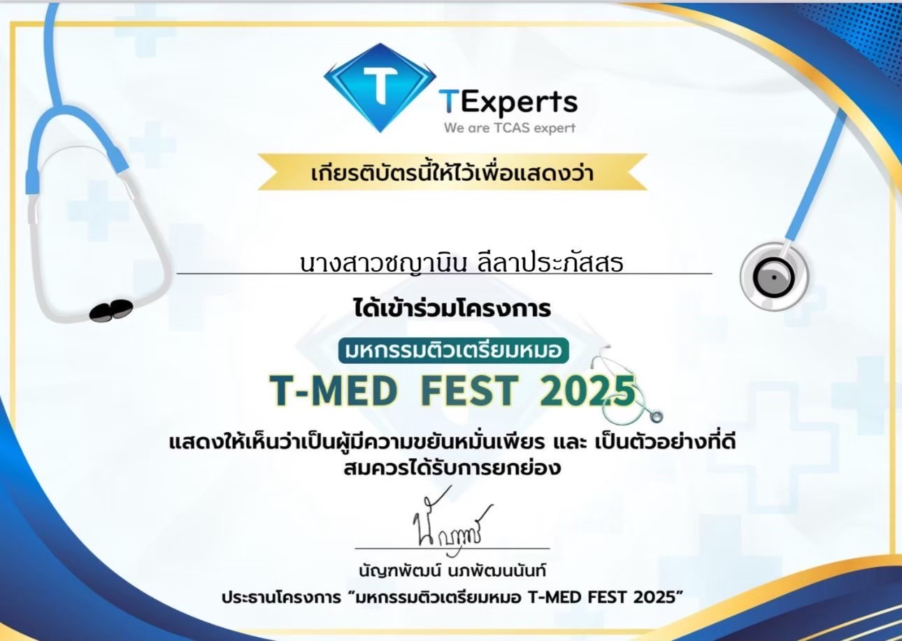
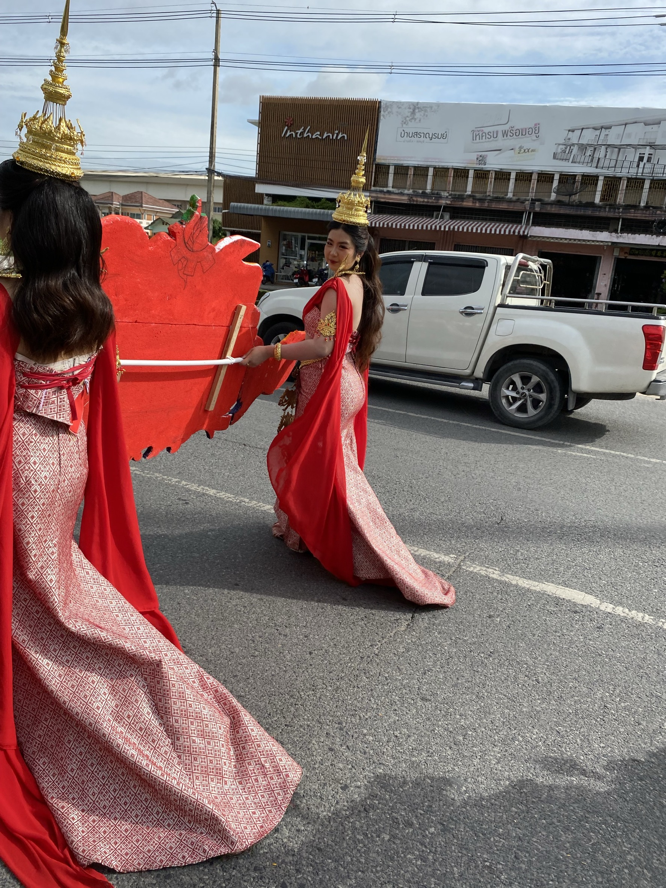

ACTIVITIES & FUTURE GOALS
กิจกรรม
และเป้าหมายในอนาคต
มหาวิทยาลัยบูรพา
คณะศึกษาศาสตร์
สาขาประถมศึกษา จิตวิทยาและการแนะแนว
← กลับหน้าหลักMY JOURNEY
ประสบการณ์ที่สร้างตัวตน
การเข้าร่วมกิจกรรมต่าง ๆ และการฝึกประสบการณ์ เป็นส่วนหนึ่งที่ช่วยให้ดิฉันได้เรียนรู้และพัฒนาตนเอง ทั้งในด้านความรับผิดชอบ การทำงานร่วมกับผู้อื่น การสื่อสาร และการปรับตัว
ประสบการณ์เหล่านี้ทำให้ดิฉันได้เรียนรู้ว่า การทำงานกับผู้อื่นจำเป็นต้องอาศัยความเข้าใจ การรับฟัง และการช่วยเหลือซึ่งกันและกัน ซึ่งเป็นทักษะสำคัญสำหรับการทำงานด้านการศึกษา
มหาวิทยาลัยบูรพา
คณะศึกษาศาสตร์
สาขาประถมศึกษา จิตวิทยาและการแนะแนว
การศึกษา • จิตวิทยา • การแนะแนว
EXPERIENCE

INTERNSHIP
การฝึกงานที่โรงพยาบาล
ได้มีโอกาสเข้าร่วมการฝึกงานที่โรงพยาบาล ซึ่งเป็นประสบการณ์ที่ทำให้ได้เรียนรู้การทำงาน ในสถานที่จริง และได้สัมผัสการทำงานร่วมกับบุคลากร ในองค์กร
ประสบการณ์ครั้งนี้ช่วยพัฒนาความรับผิดชอบ การตรงต่อเวลา การสื่อสาร การทำงานร่วมกับผู้อื่น รวมถึงการวางตัวและการปฏิบัติตนอย่างเหมาะสม

CERTIFICATE
ใบรับรองการฝึกงาน
ใบรับรองการเข้าร่วมฝึกงาน ซึ่งเป็นหลักฐานแสดงถึงประสบการณ์ และการเข้าร่วมปฏิบัติงานในสถานที่จริง
ACTIVITIES

โครงการช่วยเหลือ
โรงเรียนห้วยมะไฟ
เข้าร่วมโครงการเพื่อช่วยเหลือและสนับสนุน โรงเรียนห้วยมะไฟ ได้เรียนรู้การทำงานร่วมกับผู้อื่น การแบ่งปัน และการมีส่วนร่วมในการทำประโยชน์ ให้กับโรงเรียนและชุมชน

โครงการ
T-MED FEST
เข้าร่วมโครงการ T-MED FEST ซึ่งเป็นกิจกรรมที่ช่วยเปิดโอกาสให้ได้เรียนรู้ การทำงานร่วมกัน การจัดกิจกรรม และการสร้างประสบการณ์ใหม่ ๆ

เดินขบวนพาเหรด
กีฬาสี
มีส่วนร่วมในกิจกรรมเดินขบวนพาเหรดกีฬาสี ได้ฝึกความสามัคคี ความมีระเบียบวินัย ความรับผิดชอบ และการทำงานร่วมกับสมาชิกในทีม
04 — FUTURE GOALS
เป้าหมายในอนาคต
เรียนรู้ พัฒนา และเติบโต
ในอนาคต ดิฉันมุ่งหวังที่จะนำความรู้จาก
มหาวิทยาลัยบูรพา คณะศึกษาศาสตร์
สาขาประถมศึกษา จิตวิทยาและการแนะแนว
มาประยุกต์ใช้ในการทำงานด้านการศึกษา
ดิฉันต้องการพัฒนาตนเองให้มีความรู้
ความสามารถ และทักษะที่เหมาะสม
เพื่อเป็นส่วนหนึ่งในการส่งเสริมการเรียนรู้
และพัฒนาศักยภาพของเด็กและผู้เรียน
ให้เติบโตอย่างเหมาะสมทั้งด้านการเรียน
อารมณ์ สังคม และการใช้ชีวิต
พร้อมทั้งตั้งใจเรียนรู้ประสบการณ์ใหม่ ๆ
พัฒนาทักษะด้านการสื่อสาร การทำงานร่วมกับผู้อื่น
และการให้คำปรึกษา เพื่อนำไปต่อยอด
ในการทำงานในอนาคต
MY DIRECTION
เส้นทางที่อยากเดินต่อ
ดิฉันตั้งใจพัฒนาตนเองอย่างต่อเนื่อง ทั้งด้านความรู้และประสบการณ์ โดยเฉพาะความรู้เกี่ยวกับการจัดการเรียนรู้ จิตวิทยาเด็ก และการแนะแนว
เป้าหมายสำคัญคือการนำสิ่งที่ได้เรียนรู้ มาสร้างประโยชน์ให้กับผู้เรียน เข้าใจความแตกต่างของแต่ละบุคคล และช่วยส่งเสริมให้เด็กสามารถพัฒนาตนเอง ได้อย่างเต็มศักยภาพ
เรียนรู้สิ่งใหม่และพัฒนาความรู้
พัฒนาทักษะและประสบการณ์
เข้าใจผู้เรียนและความแตกต่าง
เติบโตไปพร้อมกับผู้เรียน
THANK YOU FOR VISITING